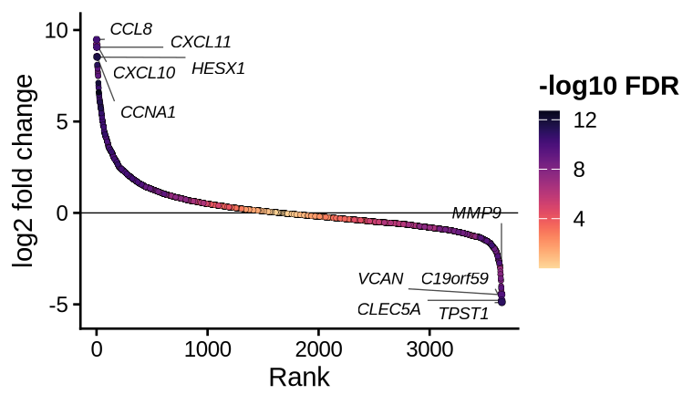
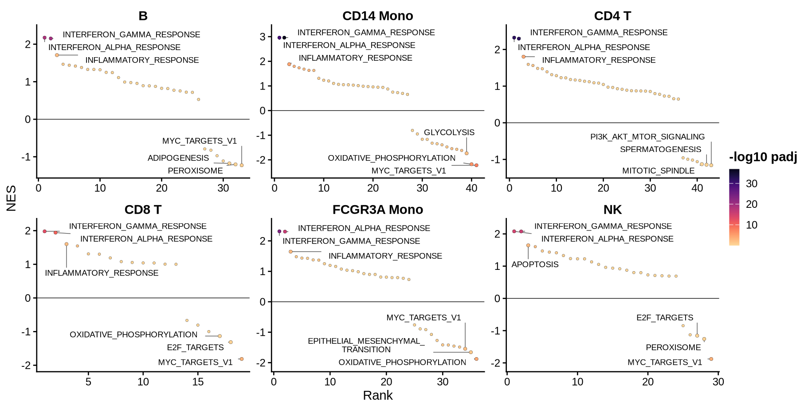
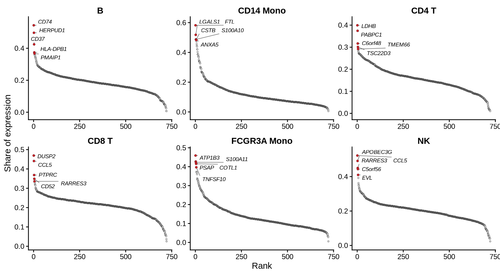
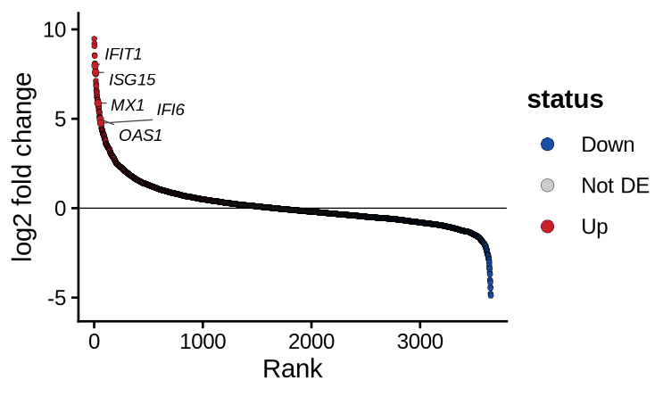
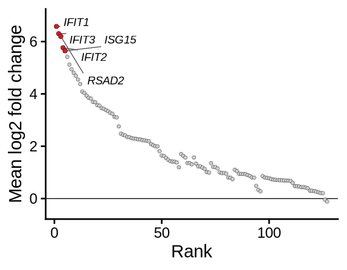
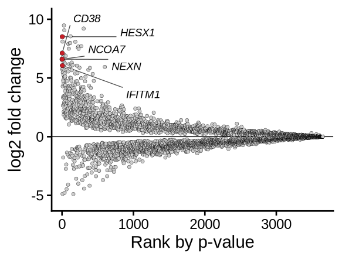

Question: which features top (or end) a ranking, and how steeply does the metric fall away from them?
| Function | Shows | Best for |
|---|---|---|
plot_rank() |
features along their rank (x) against a value (y), the ends of the ranking named | any rankable metric: fold changes, NES, specificity scores (e.g. SCENIC’s regulon specificity), reporter metabolite z-scores |
plot_rank() takes any table: rank.by is the
column the features are ranked by, value the column drawn
on y (by default the same). It is drawn small (2.5 × 1.8 in panels), to
fit in a corner of a figure, and its labels are smaller than the tick
labels (7 pt, less when they do not fit).
Data: interferon-β (IFN-β) vs control in each cell type of the PBMCs of Kang et al. 2018 (pseudobulk, edgeR; see DE: many comparisons), and the MSigDB Hallmark gene sets.
de <- docs_kang_de()
names(de)
#> [1] "CD4 T" "CD8 T" "NK" "B" "CD14 Mono"
#> [6] "FCGR3A Mono"
# Symbols shared by several genes carry their Ensembl ID ("CCL5_ENSG...");
# the symbol alone is shown
symbol <- function(x) sub("_ENSG[0-9]+$", "", x)
mono <- de[["CD14 Mono"]]
mono$gene <- symbol(rownames(mono))
mono$neg_log10_fdr <- -log10(mono$FDR)Rank plot
Genes of CD14 monocytes ranked by their log2 fold change, coloured by
the −log10 FDR. The fold change has both signs, so both ends are named
(label.side = "auto"): the most induced and the most
repressed genes.
plot_rank(
mono,
rank.by = "logFC",
feature.col = "gene",
color.by = "neg_log10_fdr",
italic.genes = TRUE,
y.title = "log2 fold change",
legend.title = "-log10 FDR"
)
Each label sits next to its gene, in the corner the curve leaves
empty (towards higher ranks at the top end, lower ranks at the bottom
end), clear of the other labels, the points and the leader lines. Labels
are placed for the panel size, so set it with panel.width /
panel.height.
Ties. Every feature gets its own position, so tied
features are never drawn on top of each other. Ties are broken by
value, then by name (never by the row order of the table),
and the source data hold both the position (rank) and the
tied rank to report (rank_tied: 1, 2, 2, 4).
Variants
One ranking per level, one panel each: here the NES of the Hallmark gene sets in each cell type (fgsea on the signed −log10 p-value, as in Gene-set enrichment), three named at each end.
hallmark <- docs_hallmark()
hallmark_list <- split(hallmark$gene_symbol, hallmark$gs_name)
signed_p <- function(t) {
stats <- -log10(t$PValue) * sign(t$logFC)
sort(setNames(stats, rownames(t)), decreasing = TRUE)
}
set.seed(1)
gsea <- lapply(names(de), function(ct) {
res <- fgsea::fgsea(
hallmark_list,
signed_p(de[[ct]]),
minSize = 15,
maxSize = 500,
eps = 0
)
data.frame(
set = sub("HALLMARK_", "", res$pathway),
NES = res$NES,
neg_log10_padj = -log10(res$padj),
cell_type = ct
)
})
gsea <- do.call(rbind, gsea)
plot_rank(
gsea,
rank.by = "NES",
feature.col = "set",
split.by = "cell_type",
color.by = "neg_log10_padj",
label.n = 3,
ncol = 3,
legend.title = "-log10 padj"
)
A specificity score is never negative and only its top matters, so only the first ranks are named. Here, a simple one (in the spirit of SCENIC’s regulon specificity score, not the same): each gene’s share of its expression summed over the six cell types (mean CPM of the cell type’s pseudobulk samples), for genes of at least 10 CPM somewhere.
genes <- Reduce(intersect, lapply(de, rownames))
cpm <- sapply(de, function(t) 2^t[genes, "logCPM"])
rownames(cpm) <- genes
cpm <- cpm[apply(cpm, 1, max) >= 10, ]
share <- cpm / rowSums(cpm)
spec <- data.frame(
gene = rep(symbol(rownames(share)), ncol(share)),
cell_type = rep(colnames(share), each = nrow(share)),
share = as.vector(share)
)
plot_rank(
spec,
rank.by = "share",
feature.col = "gene",
split.by = "cell_type",
ncol = 3,
italic.genes = TRUE,
y.title = "Share of expression"
)
Named features only, wherever they rank: here interferon-stimulated
genes, coloured by whether they are DE (color.by with a
discrete column).
mono$status <- ifelse(
mono$FDR < 0.05,
ifelse(mono$logFC > 0, "Up", "Down"),
"Not DE"
)
plot_rank(
mono,
rank.by = "logFC",
feature.col = "gene",
color.by = "status",
cols = c(Down = "#174EA6", "Not DE" = "grey80", Up = "#C91F28"),
label = "selected",
label.features = c("ISG15", "IFIT1", "MX1", "IFI6", "OAS1"),
italic.genes = TRUE,
y.title = "log2 fold change"
)
A metric with many ties: in how many of the six cell types each gene
is induced (FDR < 0.05, log2 fold change > 1), with the genes of
each count ordered by their mean fold change (value). The
tied rank to report is in the source data.
up <- sapply(de, function(t) {
t[genes, "FDR"] < 0.05 & t[genes, "logFC"] > 1
})
breadth <- data.frame(
gene = symbol(genes),
n_cell_types = rowSums(up),
mean_logfc = rowMeans(sapply(de, function(t) t[genes, "logFC"]))
)
breadth <- breadth[breadth$n_cell_types > 0, ]
p <- plot_rank(
breadth,
rank.by = "n_cell_types",
value = "mean_logfc",
feature.col = "gene",
italic.genes = TRUE,
y.title = "Mean log2 fold change"
)
p
src <- attr(p, "source_data")
head(src[order(src$rank), c("feature", "rank", "rank_tied", "rank_value", "value")])
#> feature rank rank_tied rank_value value
#> 123 IFIT1 1 1 6 6.579287
#> 124 IFIT3 2 1 6 6.303621
#> 125 RSAD2 3 1 6 6.197879
#> 126 IFIT2 4 1 6 5.764766
#> 127 ISG15 5 1 6 5.644795
#> 1 CMPK2 6 1 6 5.415203Rank 1 is the smallest value, e.g. genes ranked by p-value, with their fold change on y.
plot_rank(
mono,
rank.by = "PValue",
value = "logFC",
feature.col = "gene",
decreasing = FALSE,
label.side = "first",
italic.genes = TRUE,
x.title = "Rank by p-value",
y.title = "log2 fold change"
)
Notes
-
Which end is named.
label.side = "auto"names both ends of a signed metric (z-scores, fold changes, NES: both directions mean something) and the first ranks otherwise (specificity, −log10 p: the end of the ranking is not of interest)."first","last"and"both"choose directly. -
Crowded panels. When the labels do not fit at 7 pt,
they are made smaller (to 5 pt, the same size in every panel); if they
still do not fit, a warning suggests a smaller
label.nor a larger panel. Long names are wrapped after spaces, hyphens, underscores or commas (label.wrap). -
Shared colour scales.
color.limitsfixes the colour scale, so that figures of several time points or conditions compare; values beyond it get the end colours.